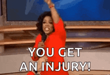
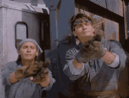
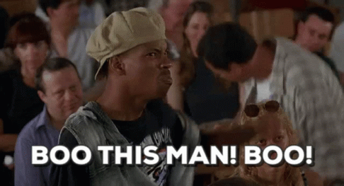
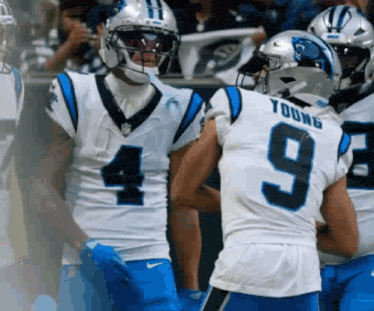
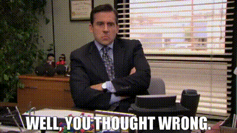

Published every Tuesday because Monday you're all still crying
Pulled from the league API: AFC and NFC divisions, in the order ESPN ranks them. Playoff odds aren't part of that feed, so they're off the board for now.
| Rk | AFC | Record | PF | PA | Streak | Moves |
|---|---|---|---|---|---|---|
| 1 | Nabers ate my Zombies | 3-1-0 | 946.1 | 863.9 | W2 | 5 |
| 2 | MaHOMELANDER | 2-2-0 | 1130.4 | 1064.3 | L2 | 1 |
| 3 | Hurt Me Moore | 2-2-0 | 1095.6 | 1070.3 | W1 | 9 |
| 4 | Covfefe is for Closers | 2-2-0 | 1055.8 | 1031.8 | L1 | 4 |
| 5 | Waddle On Deez Nuts | 2-2-0 | 966.6 | 993.1 | W2 | 1 |
| Rk | NFC | Record | PF | PA | Streak | Moves |
|---|---|---|---|---|---|---|
| 1 | Kenz VishusLicks | 3-1-0 | 972.6 | 953.0 | W3 | 5 |
| 2 | Texas Determined Domination | 2-2-0 | 876.0 | 933.4 | L1 | 7 |
| 3 | Big PeNIX Envy | 2-2-0 | 861.7 | 795.9 | W1 | 12 |
| 4 | Catchy Football Name | 1-3-0 | 850.9 | 978.3 | L3 | 2 |
| 5 | Donuts All Day 24/7 | 1-3-0 | 852.0 | 923.9 | L2 | 2 |
Two teams are 3-1, six are 2-2, and two are 1-3. Kenz has won three straight. MaHOMELANDER leads the league in points scored (1,130.4) and has lost two in a row. Big PeNIX Envy has made 12 waiver moves, the most in the league, and has allowed the fewest points (795.9).
Three games came down to a bench decision. A fourth came down to two optimizers canceling each other out.
Projected: 242.4 – 259.2
David's five best-projected starters (Chase, Barkley, Love, Smith-Njigba, and Watson) were supposed to produce 117.2 points. They produced 46.5. That's the whole game and then some: Covfefe finished 68.4 under its own projection, the worst miss in the league this week by 31 points. Some of that is not David's fault: Saquon Barkley (2.75) pulled a hamstring and Ja'Marr Chase (6.95) got a concussion after a facemask, both early in their games, so his two biggest names left before the first commercial break. Love (11.75) is currently listed questionable, and the backfield behind them is a mess. Of the seven running backs on David's roster, three are on injured reserve (Brooks, Mason, and Jadarian Price, who cost $26 in FAAB last week), one is doubtful (Hall), and two are questionable. Romeo Doubs sat on the bench and scored 28.55. JJ barely had to try: C.J. Stroud, a $1 pickup, went for 44.3, and Malik Nabers finally remembered whose name is on the team with 27.95. David is 2-2 and the optimizer is already spent.

Projected: 240.6 – 233.2
Kyren Williams scored 48.45 on a 19.1 projection and Alby still lost by 31.8, which takes real effort. Parker Washington (3.0) and Ladd McConkey (0.5, currently listed questionable) combined for 3.5 points out of two starting spots while Jameson Williams (22.2) and Rashid Shaheed (14.55) sat on the bench. Make just those two swaps and Donuts wins 229.35–227.9. It was also Jacoby Brissett's first start in place of the Justin Herbert that Alby cut on Sept. 30: 27.55 on a 35.0 projection. Big PeNIX Envy mostly won by being the less broken roster. Sam LaPorta beat his projection by 14, and Michael Penix Jr., the name on the door, put up 25.3 at OP. Twelve waiver moves and a trade in, Ryan is 2-2 and finally winning ugly.

Projected: 235.6 – 235.9
Joe Burrow (55.5) and CeeDee Lamb (53.3) combined for 108.8 points and Kolby still lost by 28.9, which is almost an accomplishment. The rest of the lineup gave him a Rashee Rice zero (listed questionable), 1.95 from Jaylen Wright, 4.8 from Emeka Egbuka, and 2.2 from Dalton Kincaid, while Brian Robinson Jr. (32.95) and Keaton Mitchell (16.8) watched from the bench. Swap Robinson in for Wright and it's 258.55–256.45, Kolby wins. He left 68.95 points on his bench, 22.2 more than anyone else in the league. Lucas's side just stacked up points: Dak Prescott 42.2, Puka Nacua 34.95, Alvin Kamara 28.3, Chris Olave 26.1, and Rhamondre Stevenson 24.9. Jaylen Waddle, the namesake, scored 16.5 on the bench. Waddle On Deez Nuts is 2-2 after starting 0-2.

Projected: 234.7 – 224.2
McCarty put up a season-high 254.95, beat his own projection by 20.25, and lost by 24.9. The part that'll sting: Kyle Monangai scored 40.75 on his bench while Garrett Wilson (7.2) started at flex. Swap them and McCarty wins 288.5–279.85. (Monangai was listed questionable, which at least explains the caution.) Ken had every skill player on the roster show up at once: Tetairoa McMillan scored 54.2 on a 19.8 projection, Bryce Young added 47.65 at OP, Kenneth Walker III had 40.65, and Tee Higgins had 35.7. That's a season-high 279.85 and three straight wins for a team this newsletter graded a C- on draft day. McCarty at least won the trade he made with Ryan on Oct. 1: the two players he got, Javonte Williams (40.3) and DK Metcalf (22.25), scored 62.55 between them, while Drake London, the one he gave up, scored 18.6.

Projected: 264.5 – 260.6
This one was settled by optimizers. Kevin's original lineup would have lost, so he spent his one-time optimizer to buy the win, which is why MaHOMELANDER's lineup came out perfect (there wasn't one more point available anywhere on his roster). Joydip had already lost a game to an optimizer this season, David's in Week 1, and wasn't about to lose a second one, so he spent his own to buy it back. That's the 20.0 in Hurt Me Moore's total that isn't tied to any player, and it's the entire reason this finished 300.6–297.4 instead of 297.4–280.6. Kevin bought the win, Joydip bought it right back, and the only lasting change is that both of them have now used their optimizer for the year. Brock Purdy (40.9), T.J. Hockenson (33.15), and Carnell Tate (28.5) all beat their projections for Kevin, who has now lost two straight while leading the league in points scored. Between Kevin, Joydip, and David's Week 1 use, that's three optimizers gone in four weeks.

Matchups are set — projections and trash talk go here once we're closer to kickoff
Projected: [Waddle On Deez Nuts proj] – [Covfefe is for Closers proj]
[Preview once Week 5 projections are available.]
Projected: [Kenz VishusLicks proj] – [Donuts All Day 24/7 proj]
[Preview once Week 5 projections are available.]
Projected: [Texas Determined Domination proj] – [Catchy Football Name proj]
[Preview once Week 5 projections are available.]
Projected: [Hurt Me Moore proj] – [Big PeNIX Envy proj]
[Preview once Week 5 projections are available.]
Projected: [Nabers ate my Zombies proj] – [MaHOMELANDER proj]
[Preview once Week 5 projections are available.]